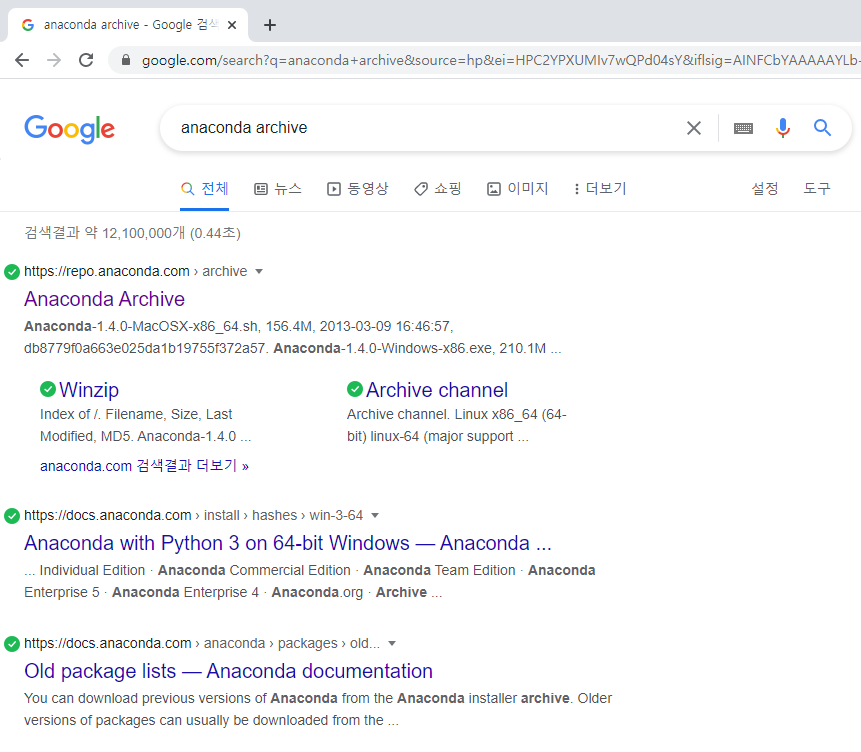

학습목표
- 아나콘다를 설치할 수 있다.
설치 버전
- 현재 아나콘다 설치 버전 : Anaconda3-2020.11 (Window버전)
- 설치 버전
파일명 : Anaconda3-2020.11-Windows-x86_64.exe
- 최신버전 설치시
다운로드 URL : https://www.anaconda.com/products/individual
# 설치 순서
01 'anaconda archive' 입력 후, 검색한다.

Anaconda Archive를 선택하여 이동합니다.
(* 해당 링크명은 달라질 수 있습니다.)
02 ANACONDA 저장소로 이동
파일명 : Anaconda3-2020.11-Windows-x86_64.exe

자신의 컴퓨터 버전에 맞춰 다운로드를 실시합니다.
현재 나오는 컴퓨터의 경우 일반적으로 원도우의 경우 64bit가 대부분입니다.
32bit와 64bit의 확인은 원도우 검색의 제어판-시스템의 확인을 통해 가능합니다.
여기서 Anaconda3은 python 3.x버전, Anaconda2는 python 2.x이니 참고해서 python 3.x 버전 다운로드를 해 주세요.
'64bit'버전을 다운로드 합니다.
Anaconda3-2020.11-Windows-x86_64.exe
03 프로그램을 다운로드를 받는다.

선택을 하면 자동으로 다운로드가 진행됩니다.
04 해당 폴더로 이동 후, 프로그램을 실행시킨다.

05 다운로드 한 프로그램을 마우스로 클릭해서 실행합니다.

06 설치를 진행합니다.
'Next' 선택합니다.

약관 동의 화면입니다. 'I Agree'를 선택합니다.

설치 유형을 선택입니다. 기본 유형(나에게만 설치)로 두고, 'Next'를 선택합니다.

프로그램 설치 위치입니다. 기본으로 두고 'Next' 선택합니다.
여기서 Space available의 용량이 Space required보다 적을 경우, 설치가 정상적으로 진행되지 않을 수 있습니다.
설치 위치를 기억해 주세요. 나중에 이를 사용할 수 있습니다.

'Install'을 선택 후, 설치를 진행합니다.

설치가 진행됩니다.

설치가 완료되었습니다. 설치가 컴퓨터 사양에 따라 3-10분 정도 진행됩니다.
'Next'를 선택합니다.

아나콘다와 함께 파이썬 tool에 대해 다운로드를 설명합니다.
'Next'를 선택합니다.

설치가 완료되었습니다.
'Finish'를 선택합니다.

아나콘다 사이트로 사이트로 연결됩니다. 이 웹 페이지는 참고해 주시고 현재는 닫습니다.

07 설치 확인 및 Jupyter notebook 실행 완료
검색에 'ana'라고 치면 Anaconda Prompt가 검색됩니다. 메뉴를 선택합니다.

Anaconda Prompt 이 실행되면 python을 입력하고 Enter를 선택합니다.

* 아나콘다가 사용하는 파이썬 버전은 python 3.8.5 버전을 사용하고 있습니다.
CTRL + Z를 누르고 입력 가능한 상태에서 conda --version 을 입력하고 Enter를 눌러 버전 확인이 가능합니다.

* 아나콘다가 사용하는 conda 버전은 conda 4.9.2 버전을 사용하고 있습니다.